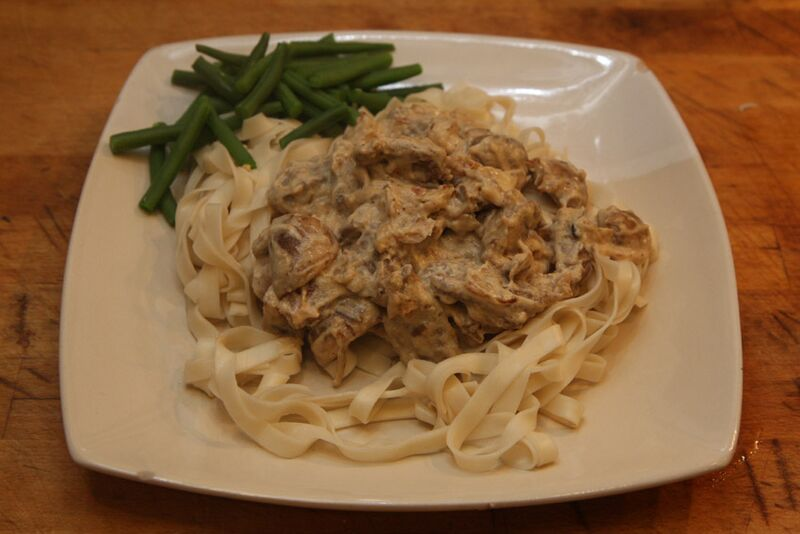

Classic Beef Stroganoff

Description
This classic Russian dish is known for its tender slices of beef in a rich, sour cream sauce,
traditionally served over egg noodles.
Ingredients
For the Beef:
- 1.5 lbs sirloin steak or beef tenderloin, sliced thinly against the grain
- 1 tbsp butter
- 1 tbsp olive oil
- Salt and freshly ground black pepper
For the Sauce:
- 1 large yellow onion, thinly sliced
- 12 oz cremini (baby bella) mushrooms, thickly sliced
- 2 tbsp butter
- 2 tbsp all-purpose flour
- 1 cup beef broth
- 1 tsp Dijon mustard
- 1/4 cup dry white wine or an additional 1/4 cup beef broth (optional)
- 1 cup sour cream, at room temperature
- Fresh parsley, chopped (for garnish)
For Serving:
- 12 oz wide egg noodles
- Salt for pasta water
Steps
- Prepare the beef: Season the sliced beef generously with salt and pepper.
- Cook the beef: Heat the olive oil and 1 tbsp of butter in a large skillet over medium-high
heat. Add the beef in batches, making sure not to overcrowd the pan, and sear quickly until
browned on both sides (about 1-2 minutes per side). Remove the beef from the skillet and set aside.
- Sauté aromatics: Reduce the heat to medium. Add the remaining 2 tbsp of butter to the skillet.
Add the sliced onions and sauté until soft and translucent, about 5-7 minutes.
- Cook mushrooms: Add the sliced mushrooms to the pan. Cook until the mushrooms have released
their moisture and are nicely browned, about 8-10 minutes.
- Deglaze (optional): If using, pour in the white wine to deglaze the pan, scraping up any browned
bits from the bottom. Let the wine reduce by half.
- Make the roux: Sprinkle the flour over the onions and mushrooms and stir constantly for 1 minute to
cook the raw flour taste out.
- Add broth: Gradually whisk in the beef broth and Dijon mustard. Bring the mixture to a simmer,
whisking until the gravy thickens.
- Cook noodles: While the sauce simmers and thickens, cook the egg noodles according to package directions
in salted water. Drain them when finished.
- Combine and finish: Turn the heat down to low. Stir in the room-temperature sour cream until fully incorporated.
Return the cooked beef (and any accumulated juices) to the skillet and stir gently to combine. Heat the mixture
through for 1-2 minutes, but do not let it boil after adding the sour cream, as it may curdle.
- Serve: Taste and adjust seasoning with salt and pepper if needed. Garnish with fresh parsley and
serve immediately over the hot egg noodles.